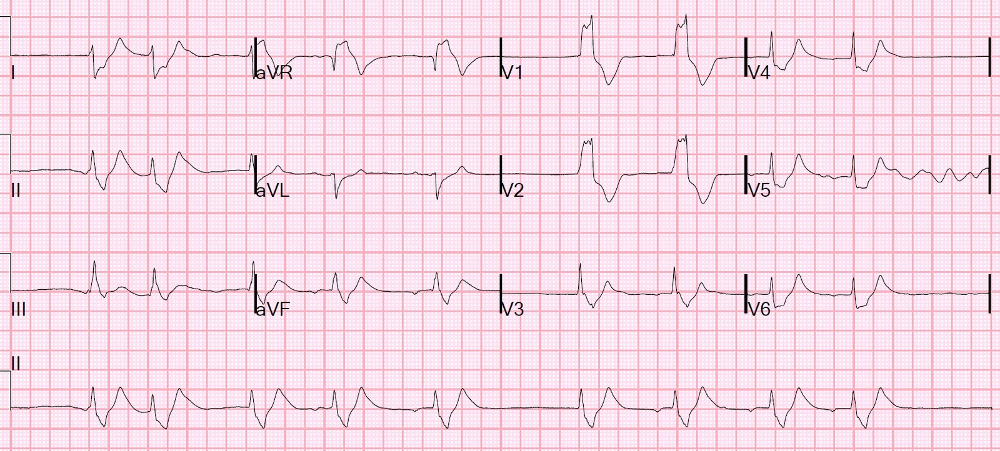
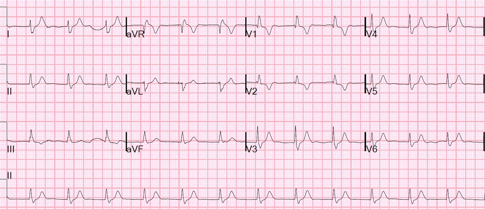
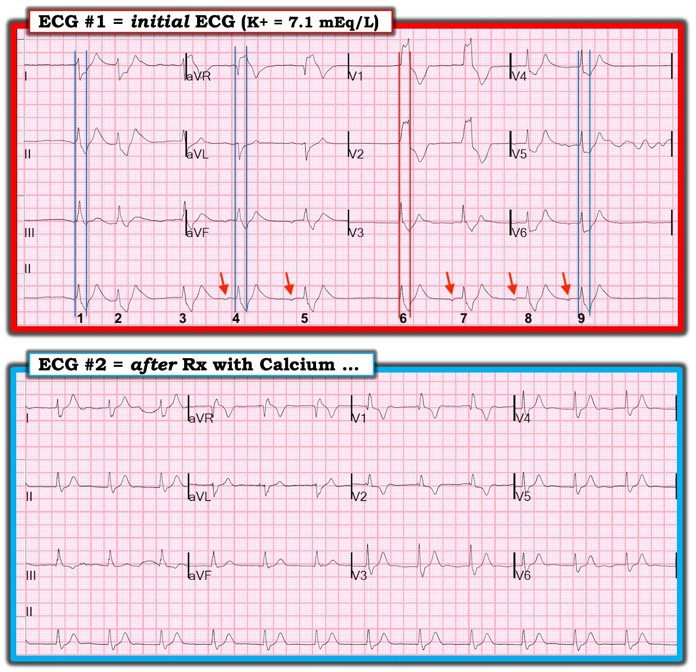

28/02/2019 — Một bệnh nhân ngừng tim, tái lập tuần hoàn tự nhiên (ROSC) và blốc nhánh phải (RBBB).
Bản dịch tiếng Việt của bài "A patient with cardiac arrest, ROSC, and right bundle branch block (RBBB)." – Dr. Smith’s ECG Blog. Giữ nguyên toàn bộ 6 hình ảnh của bản gốc.
Một bệnh nhân đến viện sau ngừng tim với hoạt động điện vô mạch (PEA), có tái lập tuần hoàn tự nhiên (ROSC) sau đặt nội khí quản và ép ngực.
Đây là điện tâm đồ 12 chuyển đạo ban đầu:


Điện tâm đồ này gần như chẩn đoán được tăng kali máu. Có một nhịp QRS rộng, chậm, không đều. Đó có phải là nhịp thoát thất? (không, vì nhịp không đều và dường như có sóng P được dẫn truyền). Hay rung nhĩ với đáp ứng thất chậm? (không, vì nhịp không đều và dường như có sóng P được dẫn truyền).
Vì có thể thấy một số hoạt động nhĩ được dẫn truyền ở chuyển đạo II dọc phía dưới, ta biết rằng nhịp có nguồn gốc trên thất. Vậy thì rõ ràng là có blốc nhánh phải (RBBB). Tuy nhiên, QRS cực kỳ rộng (máy tính đo được 193 ms, và tôi nghĩ con số này đúng), rộng hơn nhiều so với mức RBBB thường có. Ngoài ra, có thể thấy sóng T nhọn ở nhiều chuyển đạo.
Các bác sĩ đã không nhận ra điều này, nhưng họ đã nghĩ đến việc cho calci theo kinh nghiệm. Kết quả K trả về là 7.1 mEq/L và bệnh nhân đã được điều trị đầy đủ tăng kali máu.
Đây là điện tâm đồ sau điều trị:


RBBB
QRS 133 ms theo máy tính (có vẻ đúng)
Xem thêm các ca tương tự tại đây:
https://drsmithsecgblog.com/2018/04/is-this-just-right-bundle-branch-block.html (Đây có phải chỉ là blốc nhánh phải?)
Thời gian QRS trong RBBB và LBBB
Theo định nghĩa, RBBB có QRS dài (ít nhất 120 ms). Nhưng rất ít trường hợp dài hơn 190 ms. Y văn về vấn đề này hơi khó tìm, nhưng trong nghiên cứu này trên các bệnh nhân có RBBB và nhồi máu cơ tim cấp, chỉ 2% bệnh nhân có RBBB từ trước có thời gian QRS lớn hơn 200 ms. Nghiên cứu này chỉ báo cáo thời gian QRS theo các khoảng 10 ms cho tới 150 ms, nhưng có thể ngoại suy từ đó rằng khoảng 10% bệnh nhân có RBBB nền có thời gian QRS lớn hơn 160 ms. 193 ms là khá bất thường.
Ý chính ở đây là nếu bạn thấy BBB với QRS rất dài, bạn phải nghi ngờ tăng kali máu hoặc tác dụng chẹn kênh natri (ví dụ flecainide). Rồi tất nhiên sóng T nhọn phải giúp bạn nhận ra. Trừ khi bệnh nhân có tăng calci máu nặng (điều này sẽ thể hiện bằng QT ngắn trên điện tâm đồ như ở cuối bài này), hoặc tăng phosphat máu nặng (rất hiếm gặp), điều trị bằng calci là vô hại nếu bạn đọc điện tâm đồ dương tính giả với tăng kali máu.
Vì vậy đừng chờ kết quả K của phòng xét nghiệm, nếu không bạn có thể sẽ phải hồi sức một ca ngừng tim (xem ca bệnh ở bài này với điện tâm đồ #3 và #4 của bài này).
Còn LBBB thì sao?
Trong nghiên cứu này trên các bệnh nhân liên tiếp có LBBB nhập viện và được siêu âm tim, 13% có thời gian QRS lớn hơn 170 ms, và chỉ 1% có thời gian QRS lớn hơn 190 ms.
Tăng calci máu (do K. Wang cung cấp)

https://drsmithsecgblog.com/2018/04/is-this-just-right-bundle-branch-block.html (Đây có phải chỉ là blốc nhánh phải?)

==================================
Bình luận của KEN GRAUER, MD (28/2/2019):
==================================
Chủ đề quan trọng về việc nhận diện nhiều “gương mặt” của tăng kali máu được Dr. Smith minh họa tuyệt vời trong ca này. Tôi muốn mở rộng một số điểm mà Dr. Smith đã nêu bật — và khai thác chi tiết hơn một vài điểm trong số đó.
- ĐIỂM #1: NẾU nhịp là nhịp trên thất, nhưng phức bộ QRS rộng quá mức — Hãy nghĩ đến tăng kali máu! Rất dễ bỏ sót chẩn đoán này nếu bạn không chủ động cân nhắc nó như một khả năng mỗi khi thấy một nhịp trên thất có vẻ rộng-hơn-mức-bạn-nghĩ-là-nên-có.
- ĐIỂM #2: Một khi bạn đã cân nhắc khả năng tăng kali máu — Hãy nhìn thật kỹ vào sóng T. Sóng T có thể không cao hoặc không “nhọn kinh điển” với đáy hẹp như thường gặp ở giai đoạn sớm hơn của tăng kali máu (tức là khi phức bộ QRS vẫn còn hẹp) — nhưng sẽ dễ nhận ra những sóng T có-lẽ-nhọn-hơn-mức-nên-có NẾU bạn chủ động tìm chúng.
- ĐIỂM #3: Tăng kali máu nặng đôi khi gây sóng T đảo ngược thay vì sóng T nhọn! Điều này có thể chỉ xuất hiện ở một vài chuyển đạo — trái với sóng T nhọn dương thường lan tỏa hơn. Sóng T đảo ngược mà tôi từng thấy trong tăng kali máu nặng thường gần như là “hình soi gương” của sóng T nhọn dương (tức là sóng T nhọn âm).
- ĐIỂM #4: Tăng kali máu nặng thường làm giảm biên độ sóng P. Cuối cùng, có thể xuất hiện nhịp xoang-thất — trong đó dù sóng P đã biến mất trên điện tâm đồ, dẫn truyền từ nút SA qua nhĩ và thất vẫn tiếp diễn. Điều này có thể dẫn đến nghịch lý là dù có nhịp QRS rộng, đều, không có sóng P — cơ chế xoang vẫn có thể được bảo tồn.
- ĐIỂM #5: Tăng kali máu nặng thường gây nhịp chậm (có thể rất nặng) — và đủ loại blốc dẫn truyền bất thường. Nhiều rối loạn nhịp trong số này bất chấp mọi cách diễn giải logic. Dù vậy, việc xác định chính xác nhịp không quan trọng về mặt lâm sàng — vì chỉ cần điều trị tăng kali máu nặng thường là đủ để khôi phục nhịp xoang bình thường.
- ĐIỂM #6: Ngoài việc QRS giãn rộng rõ rệt — tăng kali máu nặng có thể làm biến dạng hình thái QRS, kể cả gây lệch trục rõ rệt.
- ĐIỂM #7: Bạn KHÔNG THỂ BIẾT phức bộ QRS và sóng ST-T nền thực sự trông như thế nào — cho đến khi bạn điều chỉnh tăng kali máu nặng. Ví dụ, ST chênh xuống lan tỏa nặng có sẵn từ trước có thể làm giảm bớt các sóng T cao và nhọn lan tỏa do tăng kali máu nặng — tạo ra một bức tranh lành tính đánh lừa. Chỉ sau khi K+ huyết thanh đã về bình thường thì mới có thể lộ ra rằng đã có thiếu máu cục bộ nặng từ trước.
Để cho rõ — tôi đã đặt 2 điện tâm đồ của ca này cạnh nhau để minh họa các điểm trên (Hình 1):


Tôi nghĩ rất DỄ bỏ sót căn nguyên của bản ghi PHÍA TRÊN ( = điện tâm đồ #1) trong Hình 1. Đó là vì phức bộ QRS trông không rộng lắm ở nhiều chuyển đạo! Vấn đề nảy sinh do khó biết phức bộ QRS kết thúc ở đâu …
- 2 chuyển đạo MẤU CHỐT ở điện tâm đồ #1 là chuyển đạo V1 và V2. Đây là 2 chuyển đạo trên bản ghi 12 chuyển đạo này mà KHÔNG có gì nghi ngờ về chỗ QRS bắt đầu và kết thúc. Tôi đã vẽ các đường thẳng đứng màu ĐỎ để chỉ chỗ phức bộ QRS kết thúc ở chuyển đạo V3 ghi đồng thời, cũng như ở dải nhịp chuyển đạo II dài phía dưới bản ghi.
- Dùng đúng thời gian QRS mà tôi đã đo bằng các đường thẳng đứng màu ĐỎ này — tôi vẽ các đường thẳng đứng màu XANH ở các chuyển đạo còn lại trên bản ghi để minh họa giới hạn của phức bộ QRS. Như vậy, thay vì ST chênh xuống sâu ở các chuyển đạo V4, V5 và V6 — bệnh nhân tăng kali máu nặng này biểu hiện một hình thái QRS kỳ dị.
- Và một khi ta nhận ra phức bộ QRS ở điện tâm đồ #1 thực sự rộng và kỳ dị đến mức nào (nghĩa là ta cần cân nhắc tăng kali máu) — sẽ dễ nhận ra hơn rằng dù đáy rộng, các sóng T ở chuyển đạo I, II, aVL, aVF và V3 đến V6 quả thực trông nhọn …
Nhịp trong điện tâm đồ #1 là gì?
Dải nhịp chuyển đạo II dài ở phía dưới điện tâm đồ #1 cho thấy 9 nhát bóp trong bản ghi này không đều. Đây không phải là nhịp xoang — vì không có sóng P dương ở chuyển đạo II. Nhưng hoạt động nhĩ ổn định dưới dạng sóng P âm biên độ rất nhỏ có hiện diện trước 5 nhát bóp (mũi tên ĐỎ).
- Ta biết rằng các sóng P không phải xoang này có được dẫn truyền — vì khoảng PR đứng trước các nhát #4, 5, 7, 8 và 9 là hằng định! Do đó, dù QRS giãn rộng rõ rệt — đây là một nhịp trên thất.
- Nhát #6 là một nhát thoát bộ nối — vì nó kết thúc một khoảng ngưng ngắn, và có hình thái QRS giống hệt các nhát được dẫn truyền từ nhĩ. Không thấy sóng P đứng trước ở bất kỳ chuyển đạo ghi đồng thời nào (tức là không có sóng P nào đứng trước nhát #6 ở các chuyển đạo V1, V2, V3 hay ở chuyển đạo II dài).
- Không có sóng P nào đứng trước nhát #1 và #3 — nên có lẽ đây cũng là các nhát bộ nối.
- Tôi không chắc nhát #2 là gì. Nhát này đến sớm-hơn-dự-kiến, nhưng sóng T lớn đứng trước có thể (hoặc không) đang che khuất hoạt động nhĩ.
- ĐIỀU CỐT LÕI: Đây là một nhịp bất thường. Dù vậy, điểm quan trọng đã được Dr. Smith nêu bật — cụ thể là dù QRS giãn rộng rõ rệt và nhịp không đều chắc chắn — việc một số sóng P có được dẫn truyền (dù không có nguồn gốc xoang) khẳng định đây là một nhịp trên thất.
- Về lâm sàng: Nhịp này là gì không quan trọng — vì có lẽ nó sẽ chuyển về nhịp xoang khi tăng kali máu được điều chỉnh và bệnh nhân đã ổn định.
Chúng ta Thấy gì trong điện tâm đồ #2?
Như Dr. Smith đã nói — thời gian phức bộ QRS đã giảm đáng kể ở điện tâm đồ #2. Hình thái QRS giờ trông điển hình hơn nhiều cho RBBB (phức bộ rsR’ ở chuyển đạo V1; sóng R hẹp với sóng S tận rộng ở chuyển đạo I và V6). Nhưng giờ thì hoàn toàn không có hoạt động nhĩ nào …
- Có lẽ nhịp ở điện tâm đồ #2 là nhịp bộ nối, với RBBB nền. Dù vậy, với bối cảnh lâm sàng (tức là ngừng tim kéo dài với PEA trước khi ROSC) — tôi nghĩ rất có thể đã có nhiễm toan đáng kể đi kèm, điều này rất có thể đã gây ra tăng kali máu còn nặng hơn mức mà giá trị xét nghiệm ban đầu 7.1 mEq/L gợi ý (? tùy thuộc vào thời điểm lấy mẫu xét nghiệm so với quá trình hồi sức đang diễn ra). Có thể có độ trễ giữa việc điện giải được điều chỉnh trên xét nghiệm và việc nhịp tim trở về bình thường — vậy — Liệu đây có thể là một nhịp xoang-thất không?
- Tôi nghĩ sẽ thú vị khi so sánh hình thái QRS ở điện tâm đồ #1 và điện tâm đồ #2. Chẳng phải phần đầu của phức bộ QRS gần như giống hệt nhau ở cả hai bản ghi sao?
- Rõ ràng trục lệch phải nhiều hơn ở điện tâm đồ #1. Đôi khi, tôi đã thấy những kiểu lệch trục kỳ dị trong tăng kali máu nặng — kể cả phức bộ âm hoàn toàn ở chuyển đạo I và biến mất hoàn toàn sau khi điều chỉnh rối loạn điện giải.
- Chúng ta không được cho biết giá trị K+ huyết thanh cuối cùng là bao nhiêu. Gần như bất kể giá trị đó là bao nhiêu — tôi ngờ rằng bệnh nhân này chưa thực sự ổn định vào thời điểm ghi điện tâm đồ #2 — vì sóng T ở điện tâm đồ #2 vẫn có vẻ nổi bật hơn và nhọn-hơn-mức-nên-có với RBBB đơn thuần. Ngoài ra — sóng T đảo ngược ở chuyển đạo V1 và V2 của điện tâm đồ #2 sâu hơn và nhọn hơn so với thay đổi ST-T thứ phát điển hình của RBBB. Dù điều này có thể do thiếu máu cục bộ — nó cũng có thể phản ánh ảnh hưởng còn sót lại lên ST-T của rối loạn điện giải nặng đang hồi phục. Chúng ta sẽ không biết câu trả lời cho đến khi thêm thời gian trôi qua, và cho đến khi ghi thêm một hoặc hai điện tâm đồ nữa.
- Tìm được một bản ghi nền trước đây của bệnh nhân này có thể giúp giải đáp một số câu hỏi tôi vừa nêu ở gạch đầu dòng trước …
Chúng tôi xin CẢM ƠN Dr. Smith đã trình bày ca bệnh thú vị này.